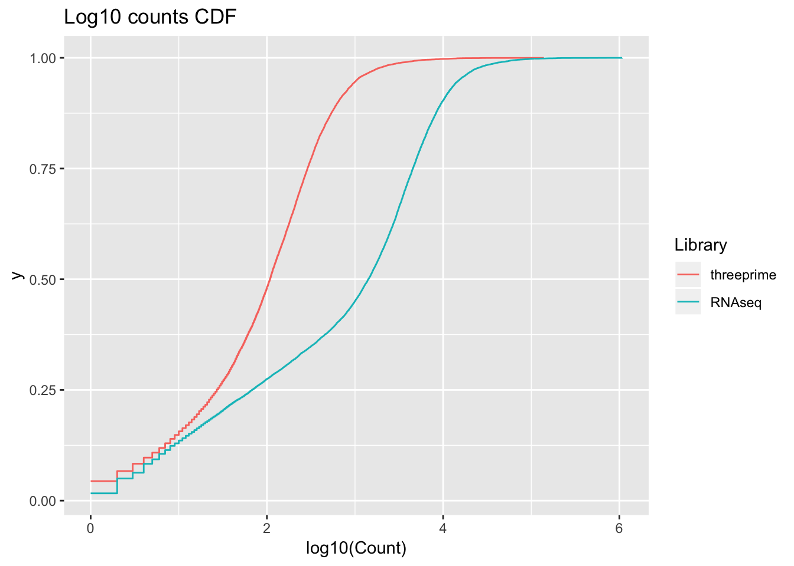

Last updated: 2018-07-13
workflowr checks: (Click a bullet for more information) ✔ R Markdown file: up-to-date
Great! Since the R Markdown file has been committed to the Git repository, you know the exact version of the code that produced these results.
✔ Environment: empty
Great job! The global environment was empty. Objects defined in the global environment can affect the analysis in your R Markdown file in unknown ways. For reproduciblity it’s best to always run the code in an empty environment.
✔ Seed:
set.seed(12345)
The command set.seed(12345) was run prior to running the code in the R Markdown file. Setting a seed ensures that any results that rely on randomness, e.g. subsampling or permutations, are reproducible.
✔ Session information: recorded
Great job! Recording the operating system, R version, and package versions is critical for reproducibility.
✔ Repository version: 4a84769
wflow_publish or wflow_git_commit). workflowr only checks the R Markdown file, but you know if there are other scripts or data files that it depends on. Below is the status of the Git repository when the results were generated:
Ignored files:
Ignored: .DS_Store
Ignored: .Rhistory
Ignored: .Rproj.user/
Ignored: output/.DS_Store
Untracked files:
Untracked: data/18486.genecov.txt
Untracked: data/YL-SP-18486-T_S9_R1_001-genecov.txt
Untracked: data/bedgraph_peaks/
Untracked: data/bin200.5.T.nuccov.bed
Untracked: data/bin200.Anuccov.bed
Untracked: data/bin200.nuccov.bed
Untracked: data/gene_cov/
Untracked: data/leafcutter/
Untracked: data/nuc6up/
Untracked: data/reads_mapped_three_prime_seq.csv
Untracked: data/ssFC200.cov.bed
Untracked: output/picard/
Untracked: output/plots/
Untracked: output/qual.fig2.pdf
Unstaged changes:
Modified: analysis/dif.iso.usage.leafcutter.Rmd
Modified: analysis/explore.filters.Rmd
Modified: analysis/test.max2.Rmd
Modified: code/Snakefile
| File | Version | Author | Date | Message |
|---|---|---|---|---|
| Rmd | 4a84769 | Briana Mittleman | 2018-07-13 | add analysis for coparing coverage of RNAseq and 3’ seq |
I will use this analysis to compare the 3’ seq data to the RNA seq data. I am going to look at the protein coding genes.
library(workflowr)Loading required package: rmarkdownThis is workflowr version 1.0.1
Run ?workflowr for help getting startedlibrary(ggplot2)
library(tidyr)
library(dplyr)Warning: package 'dplyr' was built under R version 3.4.4
Attaching package: 'dplyr'The following objects are masked from 'package:stats':
filter, lagThe following objects are masked from 'package:base':
intersect, setdiff, setequal, unionlibrary(reshape2)Warning: package 'reshape2' was built under R version 3.4.3
Attaching package: 'reshape2'The following object is masked from 'package:tidyr':
smithsLoad RNA seq gene cov for 18486.
rnaseq=read.table("../data/18486.genecov.txt")
names(rnaseq)=c("Chr", "start", "end", "gene", "score", "strand", "count")
rnaseq_counts= rnaseq %>% select(gene, count)Load all total fraction 3’ seq libraries.
t18486=read.table("../data/gene_cov/YL-SP-18486-T_S9_R1_001-genecov.txt",col.names =c("Chr", "start", "end", "gene", "score", "strand", "T18486") )
t18497=read.table("../data/gene_cov/YL-SP-18497-T_S11_R1_001-genecov.txt",col.names =c("Chr", "start", "end", "gene", "score", "strand", "T18497") )
t18500=read.table("../data/gene_cov/YL-SP-18500-T_S19_R1_001-genecov.txt",col.names =c("Chr", "start", "end", "gene", "score", "strand", "T18500") )
t18505=read.table("../data/gene_cov/YL-SP-18500-T_S19_R1_001-genecov.txt",col.names =c("Chr", "start", "end", "gene", "score", "strand", "T18505") )
t18508=read.table("../data/gene_cov/YL-SP-18508-T_S5_R1_001-genecov.txt",col.names =c("Chr", "start", "end", "gene", "score", "strand", "T18508") )
t18853=read.table("../data/gene_cov/YL-SP-18853-T_S31_R1_001-genecov.txt",col.names =c("Chr", "start", "end", "gene", "score", "strand", "T18853") )
t18870=read.table("../data/gene_cov/YL-SP-18870-T_S23_R1_001-genecov.txt",col.names =c("Chr", "start", "end", "gene", "score", "strand", "T18870") )
t19128=read.table("../data/gene_cov/YL-SP-19128-T_S29_R1_001-genecov.txt",col.names =c("Chr", "start", "end", "gene", "score", "strand", "T19128") )
t19141=read.table("../data/gene_cov/YL-SP-19141-T_S17_R1_001-genecov.txt",col.names =c("Chr", "start", "end", "gene", "score", "strand", "T19141") )
t19193=read.table("../data/gene_cov/YL-SP-19193-T_S21_R1_001-genecov.txt",col.names =c("Chr", "start", "end", "gene", "score", "strand", "T19193") )
t19209=read.table("../data/gene_cov/YL-SP-19209-T_S15_R1_001-genecov.txt",col.names =c("Chr", "start", "end", "gene", "score", "strand", "T19209") )
t19223=read.table("../data/gene_cov/YL-SP-19233-T_S7_R1_001-genecov.txt",col.names =c("Chr", "start", "end", "gene", "score", "strand", "T19223") )
t19225=read.table("../data/gene_cov/YL-SP-19225-T_S27_R1_001-genecov.txt",col.names =c("Chr", "start", "end", "gene", "score", "strand", "T19225") )
t19238=read.table("../data/gene_cov/YL-SP-19238-T_S3_R1_001-genecov.txt",col.names =c("Chr", "start", "end", "gene", "score", "strand", "T19238") )
t19239=read.table("../data/gene_cov/YL-SP-19239-T_S13_R1_001-genecov.txt",col.names =c("Chr", "start", "end", "gene", "score", "strand", "T19239") )
t19257=read.table("../data/gene_cov/YL-SP-19257-T_S25_R1_001-genecov.txt",col.names =c("Chr", "start", "end", "gene", "score", "strand", "T19257") )Merge all of the files:
threeprimeall=cbind(t18486,t18497$T18497, t18500$T18500, t18505$T18505, t18508$T18508, t18853$T18853, t18870$T18870, t19128$T19128, t19141$T19141,t19193$T19193, t19209$T19209, t19223$T19223, t19225$T19225, t19238$T19238, t19239$T19239, t19257$T19257)
threeprimeall_sum=threeprimeall %>% mutate(Counts_all= T18486,t18497$T18497, t18500$T18500, t18505$T18505, t18508$T18508, t18853$T18853, t18870$T18870, t19128$T19128, t19141$T19141,t19193$T19193, t19209$T19209, t19223$T19223, t19225$T19225, t19238$T19238, t19239$T19239, t19257$T19257) %>% select(gene, Counts_all)Warning: package 'bindrcpp' was built under R version 3.4.4threeprimeall_sum$gene=as.character(threeprimeall_sum$gene)Melt the data fro ggplot.
all_counts= cbind(threeprimeall_sum,rnaseq_counts$count)
colnames(all_counts)= c("gene", "threeprime", "RNAseq")
all_counts_melt= melt(all_counts, id.vars="gene")
names(all_counts_melt)=c("gene", "Library", "Count")Plot the CDFs
ggplot(all_counts_melt, aes(x=log10(Count), col=Library)) + stat_ecdf(geom = "step", pad = FALSE) + labs(title= "Log10 counts CDF")Warning: Removed 9859 rows containing non-finite values (stat_ecdf).
sessionInfo()R version 3.4.2 (2017-09-28)
Platform: x86_64-apple-darwin15.6.0 (64-bit)
Running under: macOS Sierra 10.12.6
Matrix products: default
BLAS: /Library/Frameworks/R.framework/Versions/3.4/Resources/lib/libRblas.0.dylib
LAPACK: /Library/Frameworks/R.framework/Versions/3.4/Resources/lib/libRlapack.dylib
locale:
[1] en_US.UTF-8/en_US.UTF-8/en_US.UTF-8/C/en_US.UTF-8/en_US.UTF-8
attached base packages:
[1] stats graphics grDevices utils datasets methods base
other attached packages:
[1] bindrcpp_0.2.2 reshape2_1.4.3 dplyr_0.7.5 tidyr_0.7.2
[5] ggplot2_2.2.1 workflowr_1.0.1 rmarkdown_1.8.5
loaded via a namespace (and not attached):
[1] Rcpp_0.12.17 compiler_3.4.2 pillar_1.1.0
[4] git2r_0.21.0 plyr_1.8.4 bindr_0.1.1
[7] R.methodsS3_1.7.1 R.utils_2.6.0 tools_3.4.2
[10] digest_0.6.15 evaluate_0.10.1 tibble_1.4.2
[13] gtable_0.2.0 pkgconfig_2.0.1 rlang_0.2.1
[16] yaml_2.1.19 stringr_1.3.1 knitr_1.18
[19] rprojroot_1.3-2 grid_3.4.2 tidyselect_0.2.4
[22] glue_1.2.0 R6_2.2.2 purrr_0.2.5
[25] magrittr_1.5 whisker_0.3-2 backports_1.1.2
[28] scales_0.5.0 htmltools_0.3.6 assertthat_0.2.0
[31] colorspace_1.3-2 labeling_0.3 stringi_1.2.2
[34] lazyeval_0.2.1 munsell_0.4.3 R.oo_1.22.0
This reproducible R Markdown analysis was created with workflowr 1.0.1